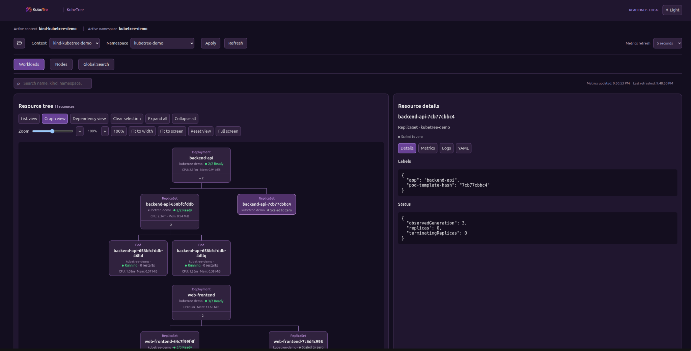
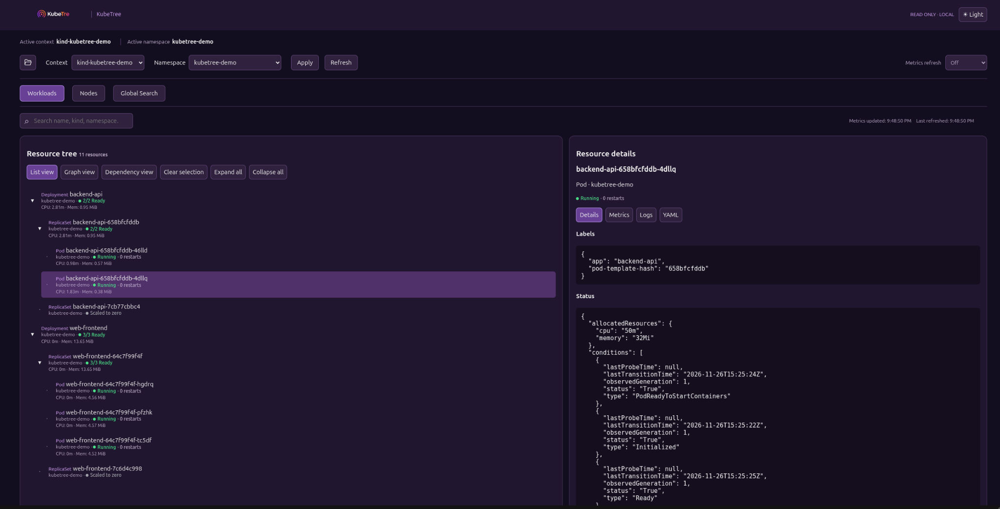
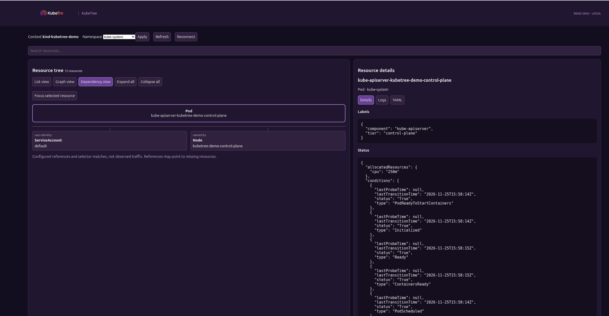
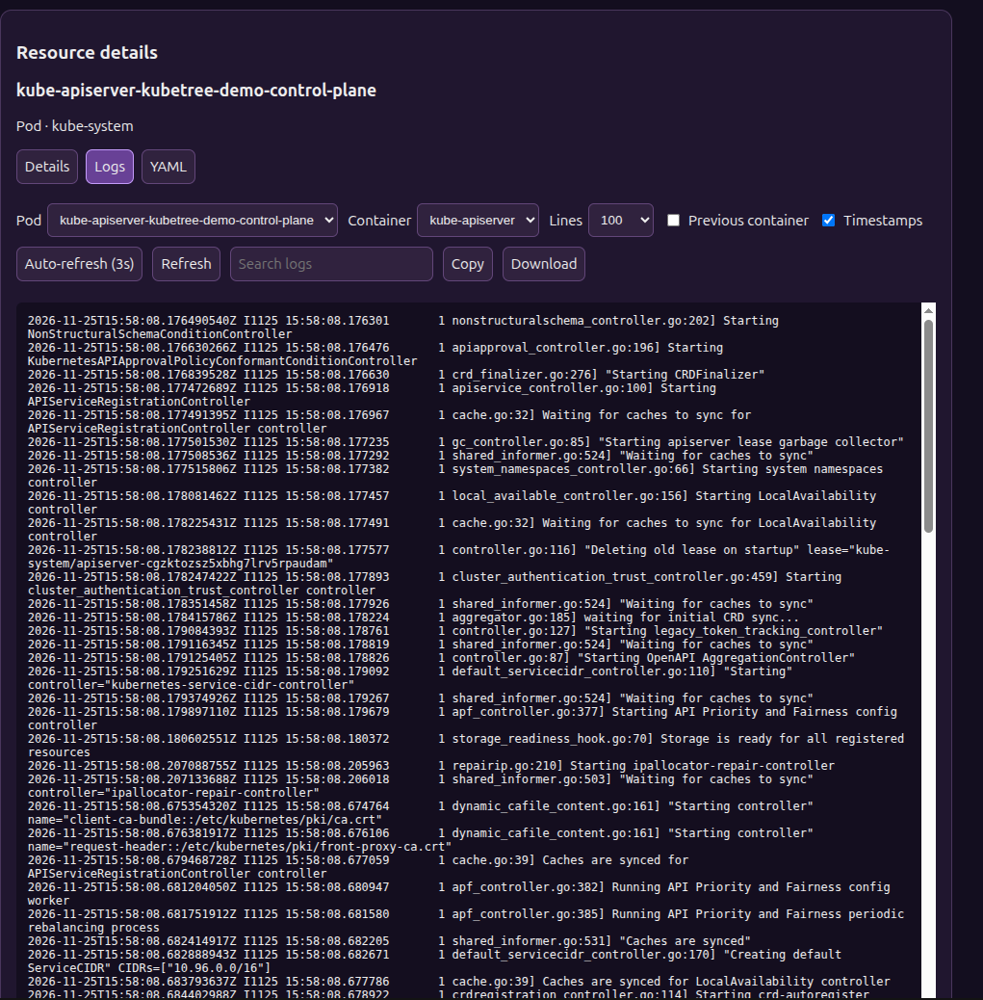

See your cluster.
Understand every connection.
Explore Kubernetes resource hierarchies, dependencies, configurations and logs with KubeTree — a lightweight, local-first visualization and troubleshooting tool.
Local-first · Read-only exploration · No in-cluster agent
Your Kubernetes resources, connected.
Resource hierarchy
Explore deployments, replica sets and pods in list and graph views.
Dependencies
Inspect configured references and selector matches between resources.
Container logs
Inspect, filter, copy and refresh container logs.
Configuration
Inspect YAML, labels and related ConfigMaps.
Secrets & certificates
Inspect authorized secrets and supported TLS certificate details on demand.
Local-first
Uses your existing kubectl configuration and Kubernetes permissions.
See KubeTree in action.

Resource list and selected pod details

Configured resource dependencies, not live network traffic

Container logs and filtering
Download. Run. Explore.
Requires kubectl on your PATH, a working kubeconfig and appropriate cluster access. No Go or Node.js installation is needed for the downloaded executable.
Executables · v0.1.6
Linux quick start
Open a terminal in the download directory.
chmod +x kubetree-linux-amd64 ./kubetree-linux-amd64
Open http://127.0.0.1:8080 after starting KubeTree.
Port occupied? Run with -listen 127.0.0.1:8081. Checksum verification is recommended before running downloaded files.
Contact & Support
Get in touch with the KubeTre team.